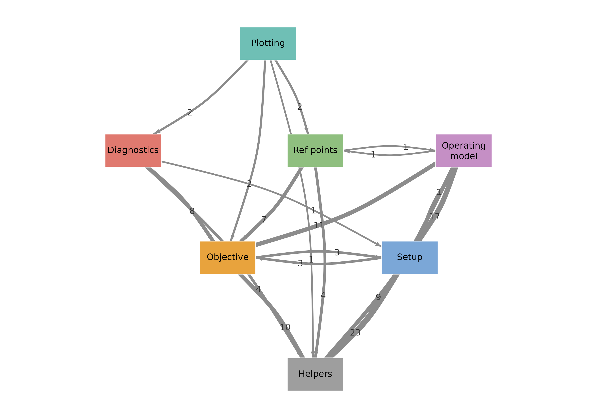
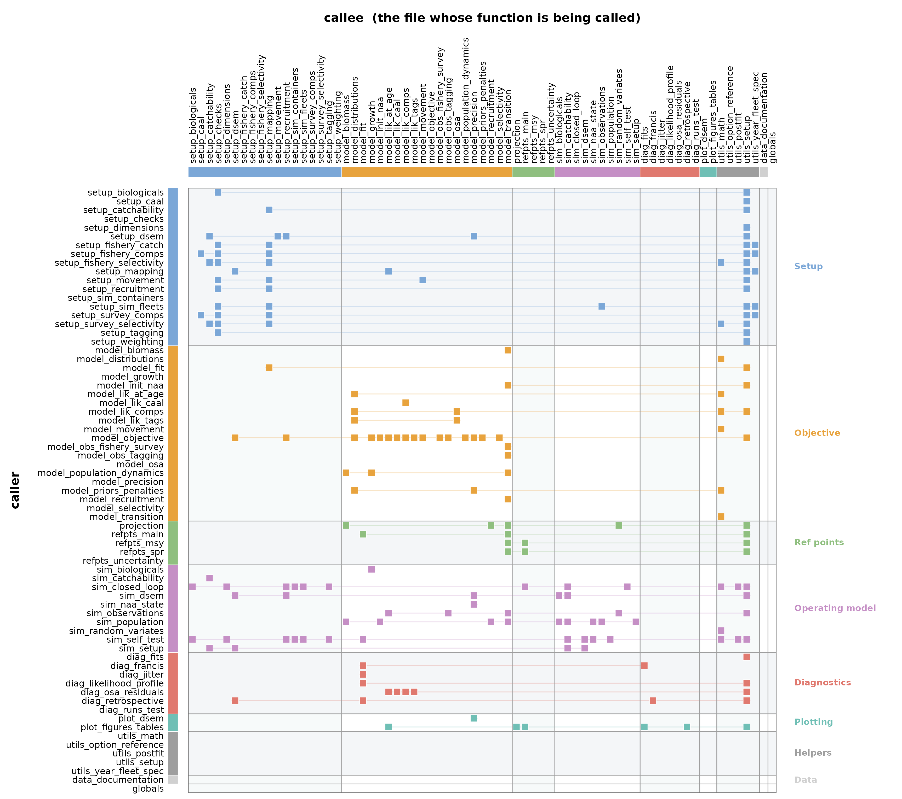

Architecture
architecture.RmdThis document is for people editing the SPoRC codebase:
contributors, successors, future you. The goal is to keep the package
navigable as it grows, especially as spatial model development adds more
moving parts. Update it whenever the pipeline below changes shape (a new
Setup_Mod_* stage, a new section of the objective function,
a new post fit diagnostic). A stale architecture document should be
treated as a bug.
Mental model
SPoRC runs in three phases, in this order.
-
Setup. A chain of R functions builds up three plain
lists:
data,parametersandmapping. No likelihood is evaluated yet. This phase is data wrangling and input validation only. -
Fit.
dataandparametersgo toRTMB::MakeADFunwrapped around a single objective function,SPoRC_rtmb(), which is optimized withnlminbplus Newton refinement. -
Post fit. The fitted object (
obj$rep,obj$sdrep,obj$optim) is passed to diagnostics, reference points, plotting and resampling routines.
Setup_Mod_Dim()
-> Setup_Mod_Rec()
-> Setup_Mod_Biologicals()
-> Setup_Mod_Movement()
-> Setup_Mod_Tagging()
-> Setup_Mod_Catch_and_F()
-> Setup_Mod_FishIdx_and_Comps() [+ Setup_Mod_Discard_Comps()]
-> Setup_Mod_Fishsel_and_Q() [+ Setup_Mod_Retsel()]
-> Setup_Mod_SrvIdx_and_Comps()
-> Setup_Mod_Srvsel_and_Q()
-> Setup_Mod_Weighting()
|
v input_list$data, input_list$par, input_list$map
fit_model(data, parameters, mapping)
| RTMB::MakeADFun(cmb(SPoRC_rtmb, data), parameters, map = mapping)
| nlminb() + Newton steps
v
obj (obj$rep, obj$sdrep, obj$optim)
|
+--> Get_Reference_Points() SPR and MSY
+--> get_idx_fits() / get_osa() fit extraction and OSA residuals
+--> plot_* / get_*_plot figures and tables
+--> do_retrospective(), do_jitter(), do_likelihood_profile(), run_francis()
+--> Do_Population_Projection(), condition_closed_loop_simulations()The input_list accumulator
Every Setup_Mod_* function takes an
input_list (initialized by Setup_Mod_Dim() as
list(data = list(), par = list(), map = list())) and
returns it with more keys filled in. This is the central structure of
the package: setup functions are pipeline stages that thread one growing
list through each other, not independent builders.
Order matters. Later stages read dimensions
(input_list$data$n_regions and friends) set by earlier
ones, and default arguments frequently reference
input_list$data$... in their own definitions. See
Setup_Mod_Rec()’s defaults for an example.
At the end of the chain input_list$data,
input_list$par and input_list$map are unpacked
and passed to fit_model(). The Setup_Sim_*
functions live in the same files as their Setup_Mod_*
counterparts and follow the identical accumulator pattern, but build
inputs for the operating model instead of for fitting.
The objective function
R/model_objective.R holds the one RTMB objective
function for every model configuration the package supports. There is no
per model branching at the file level. The objective always runs end to
end and is regulated by the switches set during setup, such as
rec_model, move_type, and the likelihood and
OSA flags.
It moves through, in order: parameter transforms (movement, natural mortality, selectivity), then mortality, recruitment, initial age structure, population projection, the observation models (fishery, survey, tagging), the likelihood components (retained and discarded catch, indices, compositions, tags), and finally priors and penalties.
Each section hands off to a module in one of the other
model_*.R files, so the objective reads as an order of
operations rather than as the arithmetic itself. If you are adding a new
data source or process, this is where its likelihood contribution gets
wired in, and the matching Setup_Mod_* function is where
its data, parameters and mapping get prepared beforehand.
Within model_objective.R the ## Section and
### Subsection comment banner style is used consistently.
Keep using it if you extend the file, since it is the only navigation
aid inside a function of this size.
Note that R/model_transition.R is worth knowing about
before anything else. It computes what happens to a vector of abundance
over one season, given movement, mortality, season duration and a
movement timing. Eleven other files go through it, including the
objective function’s dynamics, the reference point solvers and the
operating model.
Naming conventions
Files
The prefix on a file name says which phase it belongs to.
| Prefix | Phase |
|---|---|
setup_ |
Builds data, parameters and
mapping, one process or data source per file. A source
large enough to warrant it is split by topic, as
setup_fishery_*.R and setup_survey_*.R
are |
model_ |
The objective function and the modules it delegates to |
refpts_, projection
|
Reference points and forward projection off a fitted model |
sim_ |
The operating model: self testing and closed loop simulation |
diag_ |
Post fit diagnostics and residuals |
plot_ |
Figures and summary tables |
utils_ |
Helpers shared across phases |
data_ |
Roxygen documentation for the bundled datasets |
Functions
| Prefix | Role |
|---|---|
Setup_Mod_* |
Builds inputs for a fitted object |
Setup_Sim_* |
Same, for the operating model. Lives beside its
Setup_Mod_* counterpart, except for the fishery and survey,
whose operating model inputs span several topic files and so share
setup_sim_fleets.R
|
do_*_mapping |
Internal helper that builds the RTMB map for one
parameter block. This is how parameters get fixed, shared across blocks,
or turned into random effect deviations |
Get_* |
Pulls a derived quantity out of set up data, parameters or a fitted object |
do_* (top level) |
A post fit procedure that refits or perturbs a fitted model |
get_*_plot, get_*_fits
|
Post fit plotting and tabulation |
A do_*_mapping helper lives in
setup_mapping.R only if more than one setup_*
file calls it. Single caller helpers stay in the file that uses
them.
File map
Every script, what it defines, and what it talks to. This table is generated from the actual call graph, and shows “what interacts with what”. “Calls into” lists the files whose functions this one calls; “called from” is the reverse.

Edge labels count how many file to file dependencies sit behind each
arrow. Helpers is a pure sink and Plotting a
pure source, which is the shape you want: the objective function never
reaches up into the post fit machinery.
Below the same information at file resolution. A filled cell means the file on that row calls a function defined in the file in that column, and cells are grouped by stage. Empty rows call nothing else in the package, empty columns are called by nothing.

The model_transition column is the densest in the
matrix, which is the point made above: everything that moves fish
through a season goes through that one file.
Per stage detail
Setup: build data, parameters and mapping
| Script | Defines | Calls into | Called from |
|---|---|---|---|
setup_biologicals.R |
do_growth_mapping, do_natmort_mapping,
Setup_Mod_Biologicals,
Setup_Sim_Biologicals
|
setup_checks.R, utils_setup.R
|
sim_closed_loop.R, sim_self_test.R
|
setup_caal.R |
parse_caal_type, setup_caal_stream
|
utils_setup.R |
setup_fishery_comps.R,
setup_survey_comps.R
|
setup_checks.R |
check_data_dimensions,
check_sim_dimensions
|
nothing |
setup_biologicals.R,
setup_fishery_catch.R, setup_fishery_comps.R,
setup_fishery_selectivity.R, setup_movement.R,
setup_recruitment.R, setup_sim_fleets.R,
setup_survey_comps.R,
setup_survey_selectivity.R,
setup_tagging.R
|
setup_dimensions.R |
Setup_Mod_Dim, Setup_Sim_Dim
|
utils_setup.R |
sim_closed_loop.R, sim_self_test.R
|
setup_fishery_catch.R |
do_dmr_dev_mapping, do_dmr_mean_mapping,
do_Fdev_rho_mapping, do_Fmort_mapping,
do_sigma_dmr_mapping, do_sigmaC_mapping,
do_sigmaC_pop_mapping, do_sigmaD_mapping,
do_sigmaD_pop_mapping, do_sigmaF_mapping,
Setup_Mod_Catch_and_F
|
setup_checks.R, setup_mapping.R,
utils_setup.R
|
|
setup_fishery_comps.R |
Setup_Mod_Discard_Comps,
Setup_Mod_FishIdx_and_Comps
|
setup_caal.R, setup_checks.R,
setup_mapping.R, utils_setup.R
|
|
setup_fishery_selectivity.R |
Setup_Mod_Fishsel_and_Q,
Setup_Mod_Retsel
|
setup_checks.R, setup_mapping.R,
utils_math.R, utils_setup.R
|
|
setup_mapping.R |
build_pe_map, build_shared_spec_map,
check_spec_map_identifiable,
do_age_corr_setup, do_comp_corr_pars_mapping,
do_comp_theta_mapping,
do_fixed_sel_pars_mapping, do_key_mapping,
do_q_mapping, do_sel_devs_mapping,
do_sel_pe_pars_mapping, do_sigmaCAA_mapping,
do_sigmaIdx_mapping, sel_has_data,
sync_dev_map_data
|
utils_setup.R |
model_fit.R, setup_fishery_catch.R,
setup_fishery_comps.R,
setup_fishery_selectivity.R, setup_movement.R,
setup_recruitment.R, setup_survey_comps.R,
setup_survey_selectivity.R
|
setup_movement.R |
do_cont_vary_move_mapping,
do_move_pars_mapping, Setup_Mod_Movement
|
model_movement.R, setup_checks.R,
setup_mapping.R, utils_setup.R
|
|
setup_recruitment.R |
do_h_mapping, do_InitDevs_mapping,
do_rec_region_prop_mapping,
do_rec_seas_prop_mapping, do_RecDevs_mapping,
do_sexratio_pars_mapping, do_sigmaR_mapping,
do_stray_rate_mapping, Setup_Mod_Rec,
Setup_Sim_Rec
|
setup_checks.R, setup_mapping.R,
utils_setup.R
|
sim_closed_loop.R, sim_self_test.R
|
setup_sim_containers.R |
Setup_Sim_Containers |
nothing |
sim_closed_loop.R, sim_self_test.R
|
setup_sim_fleets.R |
Setup_Sim_Fishing, Setup_Sim_Survey
|
setup_checks.R, sim_observations.R,
utils_setup.R
|
sim_closed_loop.R, sim_self_test.R
|
setup_survey_comps.R |
Setup_Mod_SrvIdx_and_Comps |
setup_caal.R, setup_checks.R,
setup_mapping.R, utils_setup.R
|
|
setup_survey_selectivity.R |
Setup_Mod_Srvsel_and_Q |
setup_checks.R, setup_mapping.R,
utils_math.R, utils_setup.R
|
|
setup_tagging.R |
do_conv_init_tag_mort_mapping,
do_conv_tag_fish_reporting_pars_mapping,
do_conv_tag_shed_mapping,
do_conv_tag_theta_mapping,
recycle_tag_event_par, Setup_Mod_Tagging,
Setup_Sim_Tagging
|
setup_checks.R, utils_setup.R
|
sim_closed_loop.R, sim_self_test.R
|
setup_weighting.R |
Setup_Mod_Weighting |
utils_setup.R |
Objective function and its modules
| Script | Defines | Calls into | Called from |
|---|---|---|---|
model_biomass.R |
compute_biom_y, derive_proj_biom
|
model_transition.R |
model_population_dynamics.R,
projection.R
|
model_distributions.R |
build_idx_sd, combine_idx_sd,
dbeta_symmetric, ddirichlet,
ddirmult, dlogistnormal,
dnbinom_robust_noint, dpois_noint,
get_at_age_nLL, get_beta_scaled_pars,
get_index_nLL
|
nothing |
model_lik_at_age.R, model_lik_comps.R,
model_lik_tags.R, model_objective.R,
model_priors_penalties.R
|
model_fit.R |
cmb, fit_model
|
setup_mapping.R |
diag_francis.R, diag_jitter.R,
diag_likelihood_profile.R,
diag_retrospective.R, refpts_main.R,
sim_self_test.R
|
model_growth.R |
get_alk, Get_Growth,
get_growth_pars_year, Get_Growth_Year,
get_laa_curve, get_selected_waa,
grow_increment, growth_args_from_model,
growth_containers, growth_fill_year,
growth_laa_at, growth_len_mid,
growth_selected_waa_year, growth_start_state,
growth_take_year, plus_group_size
|
nothing |
model_objective.R,
model_population_dynamics.R
|
model_init_naa.R |
Get_Init_NAA |
model_transition.R |
model_objective.R, sim_population.R
|
model_lik_at_age.R |
get_at_age_prediction,
get_at_age_stream_nLL
|
model_distributions.R |
model_objective.R |
model_lik_caal.R |
caal_sum_pop, caal_sum_pop_len,
eval_caal_osa, Get_CAAL_Likelihoods,
pack_caal_osa
|
model_lik_comps.R |
diag_osa_residuals.R,
model_objective.R
|
model_lik_comps.R |
eval_comp_osa, Get_Comp_Likelihoods,
Get_Comp_Likelihoods_OSA, pack_comp_osa
|
model_distributions.R, model_osa.R,
utils_math.R
|
diag_osa_residuals.R, model_lik_caal.R,
model_objective.R
|
model_lik_tags.R |
eval_tag_osa, get_conv_tag_likelihoods,
pack_tag_osa, tag_fam_of,
tag_grid
|
model_distributions.R, model_osa.R
|
diag_osa_residuals.R,
model_objective.R
|
model_movement.R |
Get_Movement,
get_movement_dp_design_matrix
|
nothing |
model_objective.R, setup_movement.R
|
model_objective.R |
maintain_backwards_compatibility,
SPoRC_rtmb
|
model_distributions.R, model_growth.R,
model_init_naa.R, model_lik_at_age.R,
model_lik_caal.R, model_lik_comps.R,
model_lik_tags.R, model_movement.R,
model_obs_fishery_survey.R,
model_obs_tagging.R,
model_population_dynamics.R,
model_priors_penalties.R, model_selectivity.R,
utils_math.R, utils_setup.R
|
|
model_obs_fishery_survey.R |
get_fishery_observation_model,
get_survey_observation_model
|
model_transition.R |
model_objective.R |
model_obs_tagging.R |
get_tag_mort,
get_tagging_observation_model,
release_conv_tag_attr
|
model_transition.R |
model_objective.R, sim_observations.R
|
model_osa.R |
ddirmult_osa, ddirmult2,
dmultinom_osa, osa_extract_cdf,
osa_extract_keep, osa_extract_values,
osa_extract_x, osa_pbetabinom,
osa_pbinom, osa_squeeze
|
nothing |
model_lik_comps.R, model_lik_tags.R
|
model_population_dynamics.R |
compute_mortality_year,
get_population_projection,
mortality_args_from_model
|
model_biomass.R, model_growth.R,
model_transition.R
|
model_objective.R |
model_precision.R |
Get_3d_precision |
nothing | model_priors_penalties.R |
model_priors_penalties.R |
get_dmr_penalty, Get_Fdev_PE_loglik,
Get_move_PE_loglik,
get_movement_dirichlet_prior,
get_natmort_prior, Get_PE_loglik,
get_q_prior, get_r0_prior,
get_rec_level_penalty,
get_recruitment_penalty,
get_recruitment_proportion_priors,
get_selex_fixed_penalty, get_selex_prior,
Get_Selex_Smoothness_Penalty, get_sr_penalty,
get_steepness_prior, get_tagrep_prior
|
model_distributions.R, model_precision.R,
utils_math.R
|
model_objective.R |
model_recruitment.R |
Get_Det_Recruitment |
model_transition.R |
projection.R, sim_population.R
|
model_selectivity.R |
Get_Selex, Get_Selex_Array
|
nothing | model_objective.R |
model_transition.R |
advance_seas, build_seas_operator,
catch_at_age, integrate_seas_abundance,
seas_operator_and_integral, spawn_state,
survey_state
|
nothing |
model_biomass.R, model_init_naa.R,
model_obs_fishery_survey.R,
model_obs_tagging.R,
model_population_dynamics.R,
model_recruitment.R, projection.R,
refpts_main.R, refpts_msy.R,
refpts_spr.R, sim_observations.R,
sim_population.R
|
Reference points and projection
| Script | Defines | Calls into | Called from |
|---|---|---|---|
projection.R |
build_proj_F, Do_Population_Projection,
proj_catch_at_F, proj_log_catch_resid,
proj_target_catch, run_proj_year,
solve_proj_F_catch, solve_proj_year_F
|
model_biomass.R, model_recruitment.R,
model_transition.R, sim_random_variates.R
|
plot_figures_tables.R |
refpts_main.R |
build_plus_group_T, check_msy_rec_model,
Get_Reference_Points, optim_ref_pts,
solve_plus_group
|
model_fit.R, model_transition.R
|
plot_figures_tables.R, refpts_msy.R,
refpts_spr.R, sim_closed_loop.R
|
refpts_msy.R |
equil_rec_phi, equil_rec_ssb,
equil_rec_ssb_deriv, global_Fmsy,
local_Fmsy_multipop, local_Fmsy_sglpop,
single_region_Fmsy
|
model_transition.R, refpts_main.R
|
|
refpts_spr.R |
global_SPR, single_region_SPR
|
model_transition.R, refpts_main.R
|
Operating model
| Script | Defines | Calls into | Called from |
|---|---|---|---|
sim_closed_loop.R |
catch_to_F_multifleet,
catch_to_F_singlefleet,
condition_closed_loop_simulations,
get_closed_loop_reference_points
|
refpts_main.R, setup_biologicals.R,
setup_dimensions.R, setup_recruitment.R,
setup_sim_containers.R, setup_sim_fleets.R,
setup_tagging.R, utils_postfit.R,
utils_setup.R
|
|
sim_observations.R |
build_idx_factor, cov_to_factor,
draw_index_obs,
generate_fishery_catch_comp_idx,
generate_fishery_conv_tags_recap,
generate_survey_comp_idx,
marginalize_conv_fish_tags,
predict_sim_fish_iss_fmort, release_conv_tags,
resolve_idx_factor, simulate_caal,
simulate_comps,
simulate_conv_tag_fish_recaptures
|
model_obs_tagging.R, model_transition.R,
sim_random_variates.R, utils_math.R,
utils_setup.R
|
setup_sim_fleets.R, sim_population.R
|
sim_population.R |
apply_pop_dy, compute_biom_y_sim,
generate_initial_age_structure,
generate_recruitment, run_annual_cycle,
Simulate_Pop_Static
|
model_init_naa.R, model_recruitment.R,
model_transition.R, sim_observations.R,
sim_setup.R
|
sim_self_test.R |
sim_random_variates.R |
rdirM, rinvgauss_rec,
rlogistnormal
|
utils_math.R |
projection.R, sim_observations.R
|
sim_self_test.R |
simulation_data_to_SPoRC,
simulation_self_test
|
model_fit.R, setup_biologicals.R,
setup_dimensions.R, setup_recruitment.R,
setup_sim_containers.R, setup_sim_fleets.R,
setup_tagging.R, sim_population.R,
utils_postfit.R, utils_setup.R
|
|
sim_setup.R |
Setup_sim_env |
nothing | sim_population.R |
Diagnostics
| Script | Defines | Calls into | Called from |
|---|---|---|---|
diag_fits.R |
get_caal_fits, get_caal_prop,
get_comp_prop, get_idx_fits,
Restrc_Comps
|
utils_setup.R |
diag_francis.R, plot_figures_tables.R
|
diag_francis.R |
do_francis_reweighting,
get_francis_weights, get_francis_weights_caal,
run_francis, safe_inv_var
|
diag_fits.R, model_fit.R
|
diag_retrospective.R |
diag_jitter.R |
do_jitter |
model_fit.R |
|
diag_likelihood_profile.R |
check_analytic_q,
do_likelihood_profile
|
model_fit.R, utils_setup.R
|
|
diag_osa_residuals.R |
comp_osa_field_map, get_osa,
index_osa_field_map, osa_default_bins,
osa_keep_subset, osa_one_step_predict,
plot_resids, run_external_comp_osa,
run_internal_caal_osa, run_internal_comp_osa,
run_internal_index_osa, run_internal_tag_osa,
validate_osa_method
|
model_lik_caal.R, model_lik_comps.R,
model_lik_tags.R, utils_setup.R
|
|
diag_retrospective.R |
do_retrospective,
get_retrospective_relative_difference,
truncate_yr
|
diag_francis.R, model_fit.R
|
plot_figures_tables.R |
diag_runs_test.R |
do_runs_test |
nothing |
Plotting
| Script | Defines | Calls into | Called from |
|---|---|---|---|
plot_figures_tables.R |
get_at_age_fits_plot, get_biological_plot,
get_catch_fits_plot, get_data_fitted_plot,
get_idx_fits_plot, get_key_quants,
get_nLL_plot, get_retrospective_plot,
get_selex_plot, get_ts_plot,
plot_all_basic, theme_sablefish
|
diag_fits.R, diag_retrospective.R,
projection.R, refpts_main.R,
utils_setup.R
|
Shared helpers
| Script | Defines | Calls into | Called from |
|---|---|---|---|
utils_math.R |
get_AR1_CorrMat, get_Constant_CorrMat,
get_logistN_Sigma,
Get_Natural_Cubic_Spline_Weights,
rho_trans
|
nothing |
model_lik_comps.R, model_objective.R,
model_priors_penalties.R,
setup_fishery_selectivity.R,
setup_survey_selectivity.R,
sim_observations.R, sim_random_variates.R
|
utils_postfit.R |
get_model_rep_from_mcmc,
get_optim_param_list, get_par_est_info,
marg_AIC, post_optim_sanity_checks
|
nothing |
sim_closed_loop.R, sim_self_test.R
|
utils_setup.R |
assign_sel_block, bins_or_null,
check_bin_map, check_comp_bins_min,
collect_message, convert_to_numeric,
drop_empty_fitted_blocks,
expand_fleet_ageing_error, extend_years,
fleet_ageing_error, obs_bin_count,
obs_len_bins, parse_bin_subset,
parse_comp_bins, parse_idx_cov,
resolve_sel_pen_wts, resync_fitted_blocks,
safe_extract, seed_dbnrml_peak,
set_data_indicator_unused, setup_dbnrml_raw,
setup_dbnrml_startbin, setup_sel_bin_devs,
setup_sel_norm_bins, setup_sel_sex_offset,
validate_selex_penalty,
validate_selex_prior_types
|
nothing |
diag_fits.R, diag_likelihood_profile.R,
diag_osa_residuals.R, model_objective.R,
plot_figures_tables.R, setup_biologicals.R,
setup_caal.R, setup_dimensions.R,
setup_fishery_catch.R, setup_fishery_comps.R,
setup_fishery_selectivity.R, setup_mapping.R,
setup_movement.R, setup_recruitment.R,
setup_sim_fleets.R, setup_survey_comps.R,
setup_survey_selectivity.R, setup_tagging.R,
setup_weighting.R, sim_closed_loop.R,
sim_observations.R, sim_self_test.R
|
Module walkthroughs
The file map above shows what calls what. It does not show
why a module is split into the particular functions it has,
which matters more once you are adding to one. Two modules below are
worked through in full as examples of the pattern; most others in
model_*.R/setup_*.R follow the same shape.
Growth
Growth is the mean length (and its spread) at age, built from up to
six parameters (L1, L2, K,
CV1, CV2, and rho under the
Richards form) and turned into the size-age transition matrix every
length composition, conditional age-at-length observation, and
length-based selectivity reads.
Setup_Mod_Biologicals() [setup_biologicals.R]
validates growth_model/growth_tv_model/growth_semipar, populates $data and $par
-> do_growth_mapping() [setup_biologicals.R]
builds $map for ln_growth_pars, ln_growth_devs, ln_growth_semipar_devs
|
v
SPoRC_rtmb() [model_objective.R]
-> growth_args_from_model() [model_growth.R]
pulls growth's ~20 arguments out of the RTMB frame by name
-> growth_tv_type == "curve": Get_Growth() builds every year up front
[model_growth.R]
growth_tv_type == "cohort": one year at a time, from inside the
population's year-by-year loop, because the
plus group's size depends on how many old vs.
really-old fish are alive THAT year, which
growth cannot know in advance
-> Get_Growth_Year() [model_growth.R]
builds this year's growth, given the population's numbers at age
-> growth_take_year() [model_growth.R]
copies that year's growth into the objective's own arrays
-> mortality_year() [model_objective.R]
rebuilds that year's fishing/total mortality; only actually
changes anything for a length-based gear, whose age-specific
selectivity is read off growth's key, but runs every year
regardless rather than special-casing age-based gears out
-> (both) growth_selected_waa_year() [model_growth.R]
called from the objective's mortality_year step, once per year, only for
fleets flagged fish_waa_selected / srv_waa_selected
-> ### Growth (Process Error): Get_PE_loglik() [model_priors_penalties.R]
penalizes ln_growth_devs and ln_growth_semipar_devs for departing from the
process they are supposed to follow, the same function selectivity uses| Function | Why it is its own function |
|---|---|
get_laa_curve() |
The pure closed-form curve: mean length and spread at a vector of
real ages, from the six parameters alone. No notion of years, fleets, or
cohorts, so it is unit-testable against the textbook von
Bertalanffy/Richards formula directly (test-model_growth.R
does exactly that) without any model scaffolding around it. |
growth_start_state() |
The state a year starts from: get_laa_curve() at every
integer age, with the plus group adjusted. Both
growth_tv_types need a “year 1 initial state” and need it
built identically, so it is factored out rather than duplicated in
Get_Growth() and Get_Growth_Year(). |
growth_laa_at() |
The within-year evaluator at one elapsed time e. Under
"curve" growth every age is just
get_laa_curve() at its real age; under
"cohort" growth, ages already propagated carry a length
history the closed form does not know about, so they instead grow from
L_beg via grow_increment(). One function,
branching on cohort, rather than two, because everything
else in it (the plus group, the CV, the semi-parametric deviation) is
identical either way. |
grow_increment() |
The one piece of math with no dependency on ages, A1,
or A2 at all: grow a length e further given
K, Linf, rho. Reused in two
genuinely different contexts, evaluating a fleet’s within-year timing
(growth_laa_at) and advancing a cohort a full year
(Get_Growth_Year), which is why it is not inlined into
either. |
growth_fill_year() |
“Every fleet, timing, and spawning point in one year,” given a
start-of-year state: walks each distinct
t_fish/t_srv/t_spawn value once
(deduplicated), builds the key via get_alk(), and writes it
into every fleet that reads at that timing. Both
Get_Growth() (looping over years on the “curve” path) and
Get_Growth_Year() (one year at a time on the “cohort” path)
call it with a different start-of-year state, so the fleet-timing
bookkeeping is written once. |
plus_group_size() |
The survivorship-weighted mixture for a plus group’s mean length.
Kept out of get_laa_curve() because it needs
Linf and the curve’s own last-age value together, plus the
growth_plus_group flag; get_laa_curve()’s job
is only ever the raw curve. |
get_growth_pars_year() |
Applies a year’s time-varying deviations (log or logit link) to the
base parameters once, before anything else runs, so
growth_start_state(), growth_laa_at(), and
growth_fill_year() never have to know deviations exist;
they only ever see “this year’s realized parameters.” |
do_growth_mapping() |
Setup side: builds every growth map (parameters, time-varying
deviations, semi-parametric surface) in one place, called from
Setup_Mod_Biologicals()’s # Mapping Options
section next to do_natmort_mapping(), so that function’s
own body stays validate-then-hand-off like every other
Setup_Mod_*. |
Two separate things are going on here, worth telling apart.
Growth has to run inside the population loop at all, one
year at a time, only because of the plus group. Under
growth_tv_type = "cohort", the plus group’s mean size is a
mix of the fish that were already old and the fish that just grew into
being old, weighted by how many of each there are, and that count is
only known once the population loop has actually reached that year. This
is true whatever selectivity looks like: even a model with plain
age-based selectivity still needs growth for weight at age, spawning
biomass, and length compositions, and still has this same plus-group
problem. growth_tv_type = "curve" has no such problem
(nothing carries a length history from year to year) and so builds every
year’s growth up front, before the population loop even starts.
Rebuilding that year’s mortality right alongside growth, though,
is specifically about length-based selectivity.
get_population_projection() (in
model_population_dynamics.R) takes an argument that lets it
call back out to the objective once a year;
model_objective.R uses it to run growth for that year, copy
the results in, and then also rerun that year’s fishing and total
mortality before handing control back to the population loop. That last
step only changes anything when a fleet’s selectivity is defined on
length rather than age, since that is the one case where a fleet’s
age-specific selectivity is read off growth’s key and so moves whenever
growth does. Under purely age-based selectivity the rerun leaves
mortality exactly as it already was; the code does not bother telling
the two cases apart, since redoing an unchanged calculation is cheap and
the alternative is a second, more complicated code path only for a case
that costs nothing to just repeat.
Selectivity (fishery, retention, survey)
A model has up to three kinds of selectivity: the fishery’s,
retention’s (what fraction of what the fishery catches is kept
vs. thrown back), and the survey’s. All three are set up and evaluated
by the exact same code, run three separate times with a short label
("fish", "ret", "srv") telling it
which fleet count and which set of fields to read and write. This is not
three similar-looking implementations; it is one implementation called
three times, which is why retention setup
(Setup_Mod_Retsel()) simply calls the same functions
fishery setup (Setup_Mod_Fishsel_and_Q()) does.
Setup_Mod_Fishsel_and_Q()/Setup_Mod_Retsel()/Setup_Mod_Srvsel_and_Q()
[setup_fishery_selectivity.R / setup_survey_selectivity.R]
validate blocks, functional form per block, time-varying spec
-> do_fixed_sel_pars_mapping(..., "fish"/"ret"/"srv") [setup_mapping.R]
maps the block-level functional-form parameters (b50, slope, double normal's 6, ...)
-> do_sel_pe_pars_mapping(..., "fish"/"ret"/"srv") [setup_mapping.R]
maps the process-error settings for whichever time-varying form is chosen
-> do_sel_devs_mapping(..., "fish"/"ret"/"srv") [setup_mapping.R]
maps the year-by-year deviations themselves
|
v
SPoRC_rtmb() [model_objective.R]
## Selectivity: Get_Selex_Array(), once for each of the three [model_selectivity.R]
works out which block and which deviation applies to a given
region/year/fleet, then hands the actual math off to:
-> Get_Selex() [model_selectivity.R]
given one set of parameters and a vector of bins, the selectivity at
each bin; knows nothing about years, blocks, or fleets
### Selectivity (Penalty): Get_PE_loglik(), once for each of the three
[model_priors_penalties.R]
penalizes the year-by-year deviations for departing from whatever
process they are supposed to follow (iid, random walk, ...); the same
penalty function growth uses
### Selectivity Smoothness (Penalty) [model_objective.R]
a separate penalty just for the bicubic spline form, since a smooth
surface is not "deviations from a base curve" the way the others are
### Selectivity (Prior) / Parameter Centering (Penalty)
-> get_selex_prior() / get_selex_fixed_penalty() [model_priors_penalties.R]| Function | Why it is its own function |
|---|---|
do_fixed_sel_pars_mapping(),
do_sel_pe_pars_mapping(),
do_sel_devs_mapping()
|
Three separate functions because a fleet can turn each piece on independently: the curve’s own parameters, whether it varies over time and under what process, and the actual deviation values. A fleet might hold the curve fixed with no deviations, vary it under one process with the process’s own settings fixed, or estimate both together. Keeping the three apart means each one’s sharing options do not have to be reconciled against the other two inside a single function. |
Get_Selex_Array() |
The only place that knows about SPoRC’s blocks, year-by-year
deviations, and fleet counts. Works out which block and which deviation
apply to a given region/year/fleet, then hands off to
Get_Selex(). |
Get_Selex() |
Given one functional form and its parameters, the selectivity at a
vector of bins, nothing else. Because it does not know about years,
blocks, or fleets, test-model_selectivity.R can check every
functional form directly against its formula without building a whole
model around it, and Get_Selex_Array()’s only job is the
block/year/fleet bookkeeping around it. |
Get_PE_loglik() |
Lives in model_priors_penalties.R, not
model_selectivity.R or model_growth.R, because
it does not need to know which one is calling it: give it a deviation
array, its map, and a code for which process (iid, random walk, …) it is
supposed to follow, and it penalizes departures from that process. That
is what lets growth and selectivity call the same function with the same
five arguments. |
The same shape shows up elsewhere too
The setup side of this pattern is used everywhere in the package:
every Setup_Mod_* function ends by handing its parameter
blocks to one or more do_*_mapping helpers
(do_RecDevs_mapping() for recruitment,
do_conv_tag_fish_reporting_pars_mapping() for tagging, and
so on). Each one stays in the topic’s own setup_*.R file
unless more than one file needs it, in which case it moves to the shared
setup_mapping.R.
The scoring side is not as uniform, which is worth knowing. Growth
and selectivity’s year-by-year deviations both go through the same
Get_PE_loglik(). Movement’s own deviations
(move_devs) instead have their own penalty function,
Get_move_PE_loglik(), sitting right next to
Get_PE_loglik() in model_priors_penalties.R
rather than sharing it, because a movement deviation has to know about
which regions are adjacent to which and what kind of movement model is
in use, which Get_PE_loglik() has no way to be told about.
Tagging’s reporting rate is different again: it is a single estimated
number rather than something that varies by year or bin, so it gets a
plain prior (get_tagrep_prior()) instead of a deviation
series at all, since it is a single estimated rate rather than something
that varies by year or bin. When adding a new time-varying process, the
question to ask is which of these three shapes it actually is, and
whether it truly fits Get_PE_loglik()’s five arguments or
needs a sibling function the way movement’s does, rather than assuming
growth and selectivity’s choice generalizes.
How the code is layered
The code is structured as follows and interacts in a hopefully intuitive fashion. Reading it as layers, lowest first:
-
utils_math.R,utils_setup.R,utils_postfit.R,setup_checks.R,model_transition.R,model_distributions.R,model_osa.R,model_precision.R. These call nothing else in the package. - The model modules (
model_recruitment.R,model_biomass.R,model_init_naa.R,model_movement.R,model_selectivity.R,model_obs_*.R,model_lik_*.R,model_priors_penalties.R,model_population_dynamics.R). -
model_objective.R, which calls only downward into layer 2. - The post fit and simulation module: reference points, projection, diagnostics, plotting, operating model.
Tests
Test files in tests/testthat/ carry the same prefixes as
R/, so the tests for a given source file sort next to each
other and the name says what is under test rather than which stock the
fixture happens to use.
| Prefix | Files | What it covers |
|---|---|---|
test-setup_* |
16 | Input building: the map factor builders and the
Setup_Mod_* validation |
test-model_* |
28 | One objective function module each: selectivity, movement, transition, observation models, likelihoods, distributions |
test-utils_* |
6 | Shared numerical helpers |
test-sim_* |
5 | Operating model, including simulate then refit self tests |
test-refpts_* |
10 | SPR and MSY solvers, one file per spatial structure |
test-projection_* |
3 | Forward projection off a fitted model |
test-diag_* |
13 | Post fit diagnostics: retrospectives and OSA residuals |
test-integration_* |
4 | Cross cutting agreement between the objective, the reference points and the operating model |
test-regression_* |
17 | End to end fits pinning obj$rep and nll
for known configurations |
That is 119 test files in total.
Two groups are worth calling out. The test-regression_*
files pin obj$rep and nll values for known
configurations against bundled example fits, so they are the ones most
likely to catch an accidental change in the objective function’s
numerics. The test-integration_move_timing_* files are the
tightest constraint on model_transition.R and everything
built on it: they check that the reference points, the forward
projection and the operating model all agree under each movement timing,
to a tolerance that leaves no room for a sequencing mistake.
Extending the model
Adding a new process, fleet type or data source interacts with a predictable set of places.
-
Setup. Add or extend a
Setup_Mod_*function to accept the new spec, validate it, and append the results toinput_list$data,$parand$map. If parameters need fixing or sharing, add ado_*_mappinghelper in the same file, or use the shared builders insetup_mapping.Rif the pattern already exists. -
Objective. Add a
## Sectioninmodel_objective.Rthat consumes the new entries and contributes tojnllornll. Put it in the section it belongs to (transform, observation model, or likelihood and prior) rather than appending at the end. If the logic runs to more than a few lines, extract it into amodel_*.Rmodule instead of growing the objective inline. -
Simulation. If the process should be simulateable,
add the matching
Setup_Sim_*inputs and the generation logic insim_population.Rorsim_observations.R. -
Post fit. Expose derived output through a
Get_*function if other code needs to reuse it, and throughplot_figures_tables.Rordiag_fits.Rif it needs to be seen. - Tests. Add a targeted test near the feature, and check whether the regression tests need updated reference values.
- Vignette. If the feature is user facing, document it in the relevant lettered vignette rather than only in code comments.
For the mechanics of getting a change in (branch naming, running tests locally, opening a PR) see the Contributing guide.